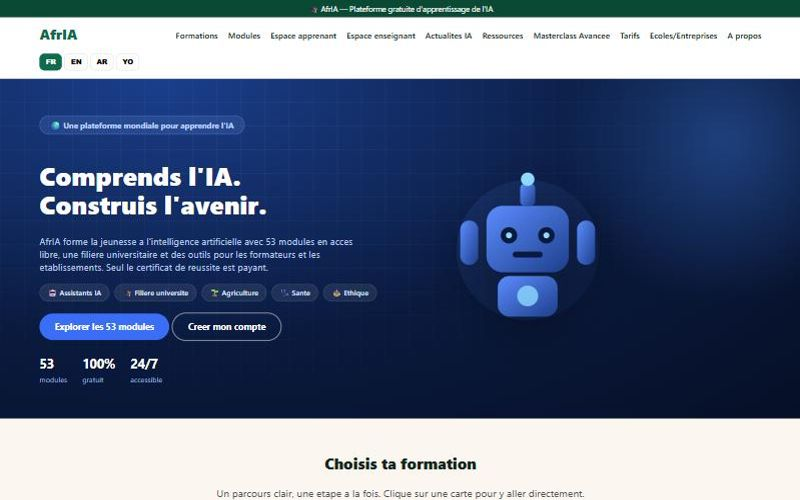
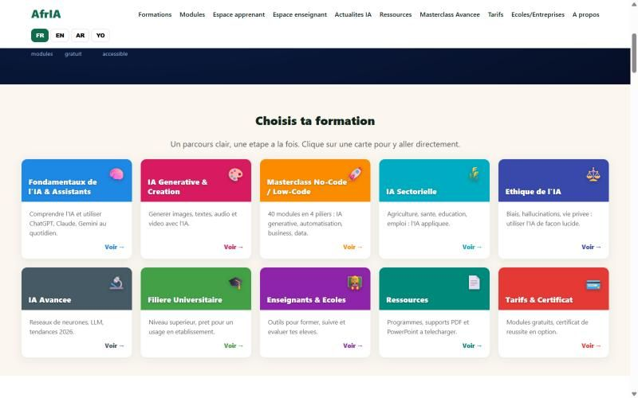

Points clés
- 53 modules en accès libre, 10 parcours thématiques
- Interface en français, anglais, arabe et yoruba
- Espace enseignant et offre écoles / entreprises
- Application installable (PWA) et actualités IA en direct
Aperçu


Auteur
Teede Augustin NOUDAMADJO, Data Scientist Junior à Lyon. Retrouvez la documentation complète, le code et la vidéo de démonstration sur GitHub.